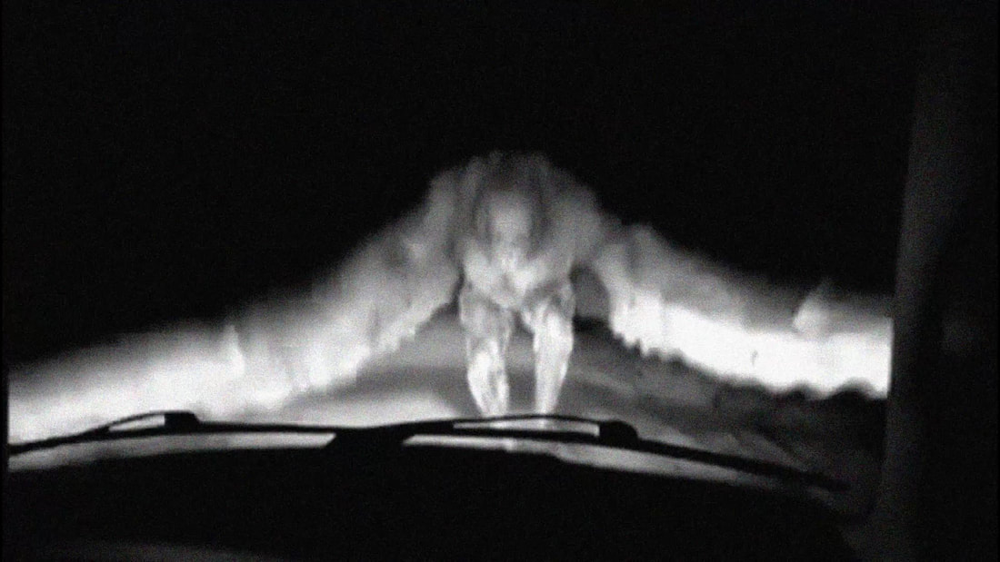

Mothman Sightings: The Creepiest Encounters (1957–2024)
November 20, 2016: Mason County, West Virginia
A man driving along State Route 2 in Mason County, West Virginia, at 7:00 p.m. on November 20, 2016, photographed a winged creature jumping between trees. The 7-foot-tall entity had pointed wings, long legs bent at odd angles, and glowing red eyes. The witness, a recent Point Pleasant resident unaware of the Mothman legend, pulled over to capture images, which showed a humanoid shape. Local resident Carolin Harris, interviewed at her diner, vouched for the sighting’s authenticity, citing the region’s history of Point Pleasant cryptid encounters.
July 2020: Flagstaff, Arizona
A camper near Lake Mary, outside Flagstaff, Arizona, reported a Mothman sighting in July 2020 at midnight. While sitting by a campfire, the anonymous witness saw a 6–7-foot-tall winged humanoid with glowing eyes fly silently over their trailer. The creature, with a 10-foot wingspan and dark, featherless wings, hovered briefly before vanishing into the night. The unverified account, shared on social media, highlighted the Mothman phenomenon’s spread to new regions.
Source: Read more here